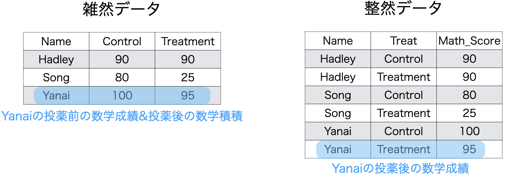
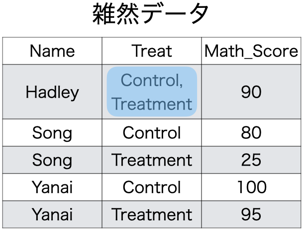

ミクロ政治データ分析実習
11/ データ・ハンドリング（3）
宋 財泫
関西大学総合情報学部
授業開始前に
すぐに実習できるように準備しておきましょう。
- JDCat分析ツールを起動しておいてください。
- 本日授業用のプロジェクトを開いてください。
- LMSから実習用データをダウンロードしておいてください。
- ダウンロードしてデータをプロジェクト・フォルダーにアップロードしてください。
- 実習用コードを入力するスクリプトファイル、またはQuartoファイルを開き、以下のコードを入力&実行してください。
- トラブルが生じた場合、速やかにTAを呼んでください。
- 時間に余裕があれば、スライド内のコードも書いておきましょう
{dplyr}：データの結合
データの結合：行
bind_rows()を利用：変数名が一致する必要がある
- 以下の例はいずれのtibble（または、data.frame）も
ID、Name、Scoreで構成されている。ID、Name、Scoreの順番は一致しなくても良い（上のdata.frameの順番に調整される）。
データの結合：行
結合前のデータ識別変数の追加
- 結合するデータを
list()でまとめ、.id引数を追加する list()の内部では"識別変数の値" = 結合するデータと定義
例) 結合後、Classという列を追加し、元々Data1だった行は"1組"、Data2だった行には"2組"を格納する。
データの結合：列
*_join()：結合に使う識別用の変数（キー変数）が必要（以下ではCity）
結合後
列結合に使う関数
識別子は両データに含まれているが、一致しないケースがある。
- どのデータの識別子を優先するか
left_join()- 左側のデータの識別子を優先する
- 空欄は欠損値として埋められる
right_join()- 右側のデータの識別子を優先する
- 空欄は欠損値として埋められる
inner_join()- 両データの識別子に共通する行のみを残して結合
full_join()- 両データの識別子に存在する行すべて結合
- 空欄は欠損値として埋められる
left_join()の仕組み
left_join(データ1, データ2, by = "識別用変数名")
- データ1を温存する
- 欠損しているセルは欠損値（
NA）で埋められる


right_join()の仕組み
right_join(データ1, データ2, by = "識別用変数名")
- データ2を温存する
- 欠損しているセルは欠損値（
NA）で埋められる


inner_join()の仕組み
inner_join(データ1, データ2, by = "識別用変数名")
- データ1とデータ2で識別子が共通する行のみ結合


full_join()の仕組み
full_join(データ1, データ2, by = "識別用変数名")
- データ1とデータ2をすべて温存
- 欠損しているセルは欠損値（
NA）で埋められる


比較 (1)
比較（2）
by = "識別用の変数名"は複数用いることも可能（例：都道府県名&年度で結合）
by = c("識別用の変数名1", "識別用の変数名2")
{tidyr}と整然データ構造
整然データ構造とは
Tidy data：Hadley Wickhamが提唱したデータ分析に適したデータ構造
- 「整然データ」、「簡潔データ」と呼ばれる。
- 対概念は「非整然データ」、「雑然データ」（messy data）
- パソコンにとって読みやすいデータ \(\neq\) 人間にとって読みやすいデータ
- {tidyr}パッケージは雑然データを整然データへ整形するパッケージ
- 次回紹介する{ggplot2}は整然データを前提として開発されたパッケージ
4つの原則
- 1つの列は、1つの変数を表す
- 1つの行は、1つの観測を表す
- 1つのセルは、1つの値を表す
- 1つの表は、1つの観測単位をもつ

原則1：1列1変数
- 1列には1つの変数のみ
- 3人の被験者に対し、薬を飲む前後の数学成績を測定した場合
- 薬を飲む前：Control / 薬を飲んだ後：Treatment

原則2：1行1観察
- 1観察 \(\neq\) 1値
- 観察：観察単位ごとに測定された値の集合
- 観察単位：人、企業、国、時間など
- 以下の例の場合、観察単位は「人 \(\times\) 時間 」

原則3：1セル1値
- この原則に反するケースは多くない
- 例外) 1セルに
2020年8月24日という値がある場合- 分析の目的によっては年月日を全て異なるセルに割り当てる必要もある
- このままで問題とならないケースも

原則4：1表1単位
- 政府統計：日本を代表する雑然データ
- データの中身は良いが、構造が…
- 表に「国」、「都道府県」、「市区町村」、「行政区」の単位が混在

原則4：1表1単位
- 「1表1単位」原則を満たさない場合、
filter()関数等で、異なる単位の行を除外- 以降、解説する{tidyr}でなく、{dplyr}で対応可能

{tidyr}パッケージ

雑然データから整然データへ変形をサポートするパッケージ
pivot_longer()：Wide型データからLong型データへ- 原則1・2に反するデータを整然データへ変換 (最も頻繁に使われる)
pivot_wider()：Long型データからWide型データへ- 人間には雑然データの方が読みやすい場合がある（原則1の例）
separate()：セルの分割（「年月日」から「年」、「月」、「日」へ）- 原則3に反するデータを整然データへ変換
- 原則4に反するデータは分析単位が異なる行を
filter()などで除外
実習用データ
covid_sample.csv：中国、日本、韓国、モンゴル、台湾の5日間COVID-19新規感染者数
- LMSからダウンロード
- データ出典：Johns Hopkins University Center for Systems Science and Engineering
# A tibble: 5 × 7
Country Population `2022/06/09` `2022/06/10` `2022/06/11` `2022/06/12`
<chr> <dbl> <dbl> <dbl> <dbl> <dbl>
1 China 1447470092 819 848 1114 990
2 Japan 126476461 16788 15584 15338 13381
3 Korea 51269185 9304 8428 7382 3828
4 Mongolia 3278290 0 0 0 0
5 Taiwan 23816775 72846 68293 79616 50567
# ℹ 1 more variable: `2022/06/13` <dbl>このデータの問題点
- 観察単位は? 測定した変数は?
- 観察単位：地域 \(\times\) 時間
- 変数：新規感染者数、人口
- 2つの観察時点 + 2つの変数 = 計4つの変数 \(\rightarrow\) 整然データ
- 新規感染者数が5列にわたって格納されている \(\rightarrow\) 雑然データ
| Country | Population | 2022/06/09 | 2022/06/10 | 2022/06/11 | 2022/06/12 | 2022/06/13 |
|---|---|---|---|---|---|---|
| China | 1447470092 | 819 | 848 | 1114 | 990 | 957 |
| Japan | 126476461 | 16788 | 15584 | 15338 | 13381 | 7942 |
| Korea | 51269185 | 9304 | 8428 | 7382 | 3828 | 9768 |
| Mongolia | 3278290 | 0 | 0 | 0 | 0 | 1055 |
| Taiwan | 23816775 | 72846 | 68293 | 79616 | 50567 | 45100 |
Wide型からLong型へ
- 整然な
COVID_dfの構造は?- 5列を1列にまとめるため、縦に長くなる
- WideからLongへ
# A tibble: 25 × 4
Country Population Date New_Cases
<chr> <dbl> <chr> <dbl>
1 China 1447470092 2022/06/09 819
2 China 1447470092 2022/06/10 848
3 China 1447470092 2022/06/11 1114
4 China 1447470092 2022/06/12 990
5 China 1447470092 2022/06/13 957
6 Japan 126476461 2022/06/09 16788
7 Japan 126476461 2022/06/10 15584
8 Japan 126476461 2022/06/11 15338
9 Japan 126476461 2022/06/12 13381
10 Japan 126476461 2022/06/13 7942
# ℹ 15 more rowspivot_longer()：Wide to Long
colsはdplyr::select()と同じ使い方c()で個別の変数名を指定することも、:やstarts_with()、!、-を使うこともOK- 注意：変数名が数字で始まったり、記号が含まれている場合、変数名を
`か"で囲む。- 列名が日付の場合、数字で始まったり、記号（
/や-など）が含まれるケースが多い。
- 列名が日付の場合、数字で始まったり、記号（
pivot_longer()：WideからLongへ
cols = starts_with("2022")もOK
# A tibble: 25 × 4
Country Population Date New_Cases
<chr> <dbl> <chr> <dbl>
1 China 1447470092 2022/06/09 819
2 China 1447470092 2022/06/10 848
3 China 1447470092 2022/06/11 1114
4 China 1447470092 2022/06/12 990
5 China 1447470092 2022/06/13 957
6 Japan 126476461 2022/06/09 16788
7 Japan 126476461 2022/06/10 15584
8 Japan 126476461 2022/06/11 15338
9 Japan 126476461 2022/06/12 13381
10 Japan 126476461 2022/06/13 7942
# ℹ 15 more rowspivot_wider()：LongからWideへ
- Long型をWide型へ戻す関数
- 人間にとってはLong型よりWide型の方が読みやすいケースも多い
- 1列に2つの変数が入っている場合もある
# A tibble: 5 × 7
Country Population `2022/06/09` `2022/06/10` `2022/06/11` `2022/06/12`
<chr> <dbl> <dbl> <dbl> <dbl> <dbl>
1 China 1447470092 819 848 1114 990
2 Japan 126476461 16788 15584 15338 13381
3 Korea 51269185 9304 8428 7382 3828
4 Mongolia 3278290 0 0 0 0
5 Taiwan 23816775 72846 68293 79616 50567
# ℹ 1 more variable: `2022/06/13` <dbl>pivot_longer()とpivot_wider()

separate()：列の分割
COVID_LongのDate列をYear、Month、Dayに分けたい
- 例)
Date列を"/"を基準に分割する
separate()：列の分割
# A tibble: 25 × 6
Country Population Year Month Day New_Cases
<chr> <dbl> <chr> <chr> <chr> <dbl>
1 China 1447470092 2022 06 09 819
2 China 1447470092 2022 06 10 848
3 China 1447470092 2022 06 11 1114
4 China 1447470092 2022 06 12 990
5 China 1447470092 2022 06 13 957
6 Japan 126476461 2022 06 09 16788
7 Japan 126476461 2022 06 10 15584
8 Japan 126476461 2022 06 11 15338
9 Japan 126476461 2022 06 12 13381
10 Japan 126476461 2022 06 13 7942
# ℹ 15 more rows【番外編】列の分割：特定の記号がない場合
例) City_DataのCity列が「都道府県名+市区町村」
- 「最初の3文字」と「残り」で分割することは出来ない（神奈川、和歌山、鹿児島）
- 任意の2文字の後に「都」、「道」、「府」、「県」が付くか、任意の3文字の後に「県」が付く箇所を見つけて分割
- かなり複雑
# A tibble: 4 × 2
City Pop
<chr> <dbl>
1 北海道音威子府村 693
2 大阪府高槻市 347424
3 広島県府中市 36471
4 鹿児島県指宿市 38207【番外編】列の分割：特定の記号がない場合（続）
正規表現（regular expression）の知識が必要
- テキスト分析に興味があるなら必須（前期・後期含めて、本講義では解説しない）
# A tibble: 4 × 3
Pref City Pop
<chr> <chr> <dbl>
1 北海道 音威子府村 693
2 大阪府 高槻市 347424
3 広島県 府中市 36471
4 鹿児島県 指宿市 38207{tidyr}と{dplyr}の組み合わせ
{tidyr}と{dplyr}を組み合わせることも可能
- 例) 100万人当たりの新規感染者数を計算し、国ごとに平均値を計算
# A tibble: 5 × 2
Country New_Case_per_1M
<chr> <dbl>
1 China 0.653
2 Japan 109.
3 Korea 151.
4 Mongolia 64.4
5 Taiwan 2657.